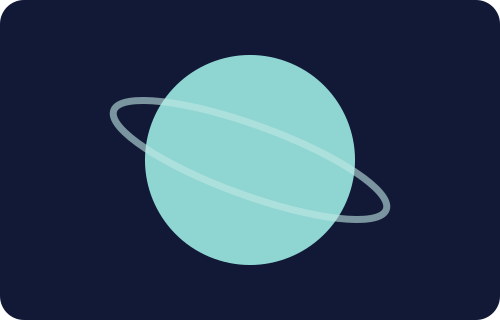

🪐 ดาวยูเรนัส
เนื้อหาความรู้เกี่ยวกับดาวยูเรนัส

ลักษณะทั่วไป
ดาวยูเรนัสเป็นดาวเคราะห์ลำดับที่ 7 จากดวงอาทิตย์ และเป็นหนึ่งในดาวเคราะห์น้ำแข็ง มีสีฟ้าอมเขียวเนื่องจากก๊าซมีเทนในบรรยากาศดูดกลืนแสงสีแดง
ข้อมูลสำคัญ
ดาวยูเรนัสมีแกนหมุนเอียงประมาณ 98 องศา ทำให้ดูเหมือนดาวหมุนในลักษณะตะแคงเมื่อเทียบกับระนาบการโคจร
เพิ่มเติม
การเอียงของแกนหมุนส่งผลให้เกิดฤดูกาลที่มีความแตกต่างอย่างมาก
การเอียงของแกนหมุนส่งผลให้เกิดฤดูกาลที่มีความแตกต่างอย่างมาก
สิ่งที่น่าสนใจ
ดาวยูเรนัสมีวงแหวนบาง ๆ และมีดวงจันทร์หลายดวง แต่ระบบวงแหวนมองเห็นได้ยากเมื่อเทียบกับดาวเสาร์
ดาวยูเรนัสมีวงแหวนบาง ๆ และมีดวงจันทร์หลายดวง แต่ระบบวงแหวนมองเห็นได้ยากเมื่อเทียบกับดาวเสาร์